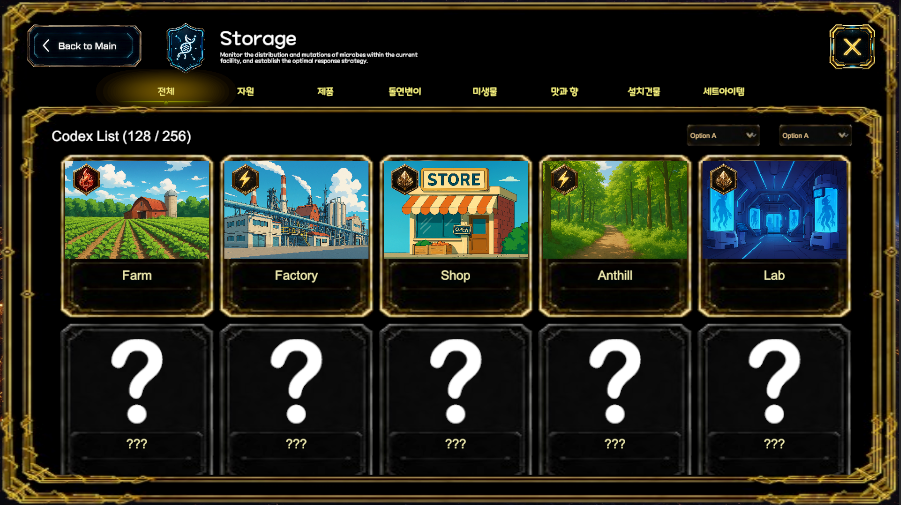
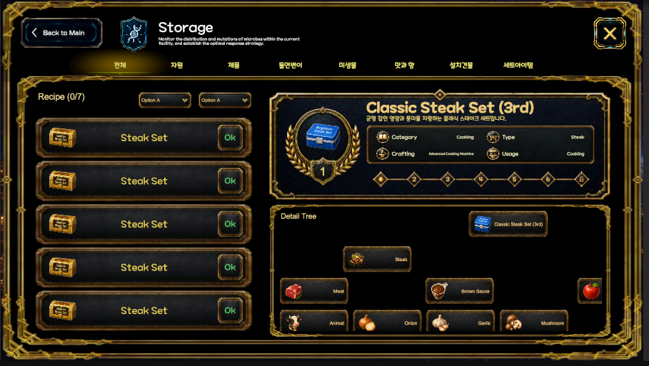
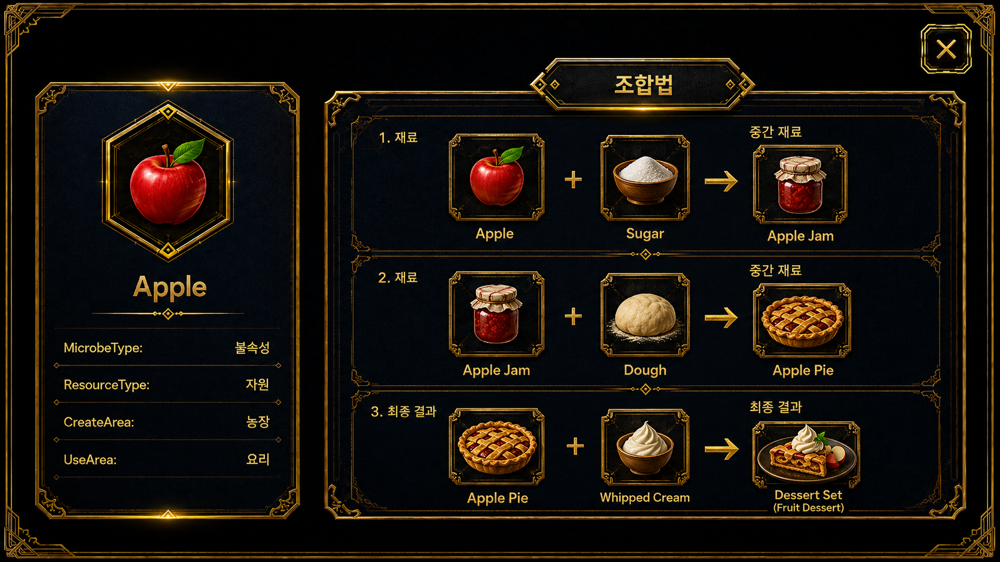

Sub System
스토리지

진입 경로
홈
→ 서브 시스템
→ 저장고저장고에서는 발견하거나 획득한 자원, 제품, 미생물, 건물, 세트 아이템과 레시피 정보를 분류하여 확인한다.
기본 구성
저장고는 상단 분류 탭과 하단 목록 영역으로 구성된다.
전체
자원
제품
동인변이
미생물
맛과 향
설치건물
세트아이템선택한 분류에 따라 저장된 항목 목록이 변경된다.
전체 목록
전체 탭에서는 현재 저장고에 등록된 모든 항목을 카드 형식으로 확인한다.
표시 정보
- 항목 이미지
- 항목 이름
- 항목 종류
- 발견 여부
- 해금 여부
- 현재 등록 수
- 최대 저장 수
Codex List
→ 발견한 항목 표시
→ 미발견 항목은 물음표로 표시화면 상단의 숫자는 현재 등록된 항목 수와 전체 항목 수를 나타낸다.
예시:
128 / 256분류 탭
저장고 항목은 종류별로 나누어 확인할 수 있다.
전체
모든 저장 항목을 표시한다.
자원
농장, 공장, 상점과 생산시설에서 사용하는 기본 재료를 표시한다.
제품
생산이 완료된 상품과 판매 가능한 제품을 표시한다.
동인변이
변이 또는 특수 조건으로 획득한 항목을 표시한다.
미생물
발견하거나 보유한 미생물 정보를 표시한다.
맛과 향
상품에 적용되는 맛과 향 관련 요소를 표시한다.
설치건물
농장, 공장, 상점, 개미굴, 연구소에 설치할 수 있는 건물을 표시한다.
세트아이템
단계별로 제작하거나 해금한 세트 상품을 표시한다.
미발견 항목
아직 발견하지 않은 항목은 이미지와 이름 대신 물음표로 표시한다.
미발견 상태
→ 물음표 카드 표시
→ 조건 충족
→ 항목 정보 해금미발견 항목은 상세 정보와 제작 조건을 확인할 수 없다.

레시피 상세
레시피 항목을 선택하면 해당 세트 상품의 상세 정보와 제작 트리를 확인한다.
레시피 목록
왼쪽 목록에서는 보유하거나 발견한 레시피를 확인한다.
표시 정보
- 레시피 아이콘
- 레시피 이름
- 보유 상태
- 사용 가능 여부
레시피 정보
오른쪽 상단에서는 선택한 레시피의 기본 정보를 확인한다.
표시 정보
- 레시피 이름
- 단계
- 카테고리
- 상품 종류
- 제작 설비
- 사용 구역
- 현재 생산 단계
예시:
Classic Steak Set (3rd)
카테고리: Cooking
상품 종류: Steak
제작 설비: Advanced Cooking Machine
사용 구역: Cooking
상세 제작 트리
오른쪽 하단에서는 선택한 상품의 직접 재료와 생산 구조를 확인한다.
최종 상품
→ 직접 필요한 중간 재료
→ 기본 재료대체 레시피는 표시하지 않고 현재 선택한 상품의 직접 생산 체인만 표시한다.
표시 정보
- 최종 상품
- 중간 재료
- 기본 재료
- 재료 연결 관계
- 제작 단계
필터와 정렬
레시피 목록 상단의 선택 메뉴를 통해 표시 항목을 필터링하거나 정렬할 수 있다.
예시:
- 카테고리
- 상품 종류
- 제작 단계
- 보유 상태
- 사용 가능 여부
전체 흐름
저장고 진입
→ 분류 탭 선택
→ 저장 항목 확인
→ 항목 선택
→ 상세 정보 확인
→ 레시피 선택 시 제작 트리 확인메뉴 설명
저장고
발견하거나 획득한 자원, 제품, 미생물, 건물, 세트 아이템과 레시피를 분류하여 확인합니다. 레시피를 선택하면 상품 정보와 직접 재료로 구성된 제작 트리를 볼 수 있습니다.